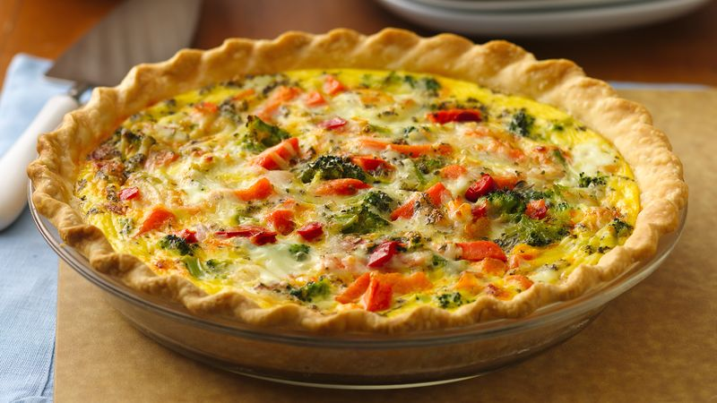

Loaded Veggies Quiche

Ingredients:
- 1 unbaked pie crust
- 1 tsp of olive oil
- 1 box of mushrooms
- 2 zucchini
- 1 tomato
- 1 bunch of basil
- ½ tsp of salt
- ½ tsp of pepper
- 2 tbsp olive oil
- ½ cup of milk
- 4 eggs
- 1 cup Colby-Monterey Jack cheese
Directions:
- Preheat oven to 400 degrees F
- Bake pie crust in preheated oven until firm, until 8 minutes. Remove crust from oven and set aside. Reduce oven heat to 350 degrees F.
- Heat olive oil in a large skillet over medium heat. Cook and stir onion, green bell pepper, mushrooms, and zucchini in hot oil unti lsoft, 5 to 7 minutes. Remove vegetables from skillet and set aside.
- Sprinkle tomato slices with flour and basil; cook in the skillet for 1 minute per side. Whisk eggs, milk, salt and pepper together in a small bowl.
- Spread 1 cup Colby-Monterey Jack cheese in the bottom of pie crust. Layer vegetable mixture over the cheese and top with the tomatoes. Pour egg mixture into pie shell. Sprinkle remaining ½ cup cheese atop the quiche.
- Bake in preheated oven until a knife inserted near the center comes out clean, 40 to 45 minutes. Cool 5 minutes before serving.